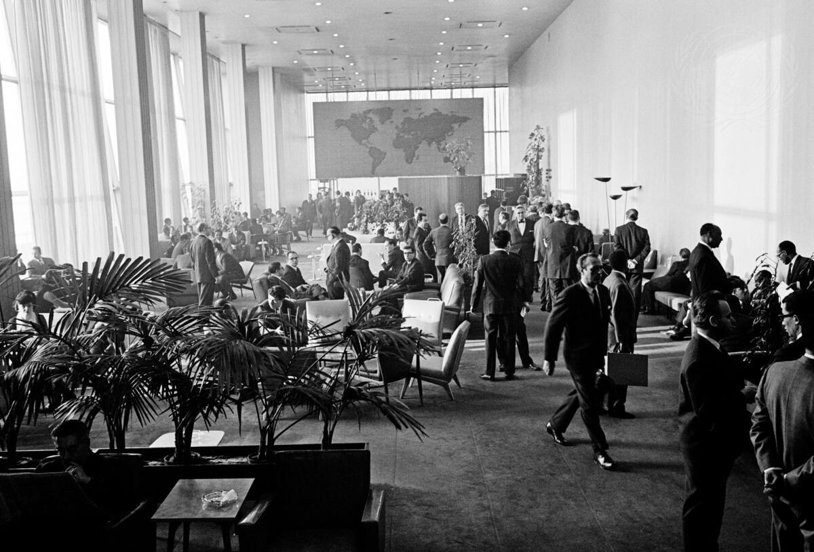
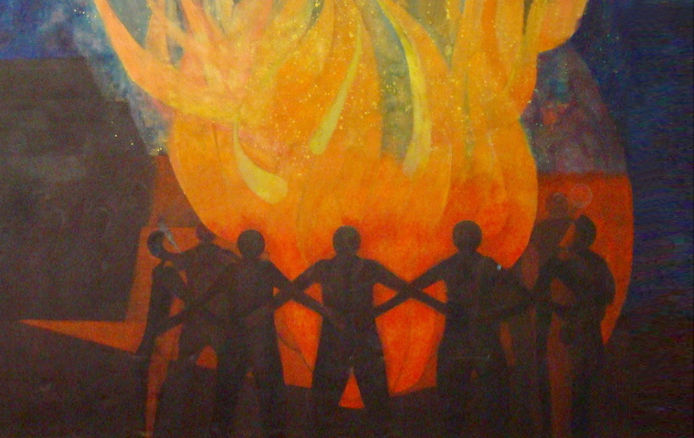
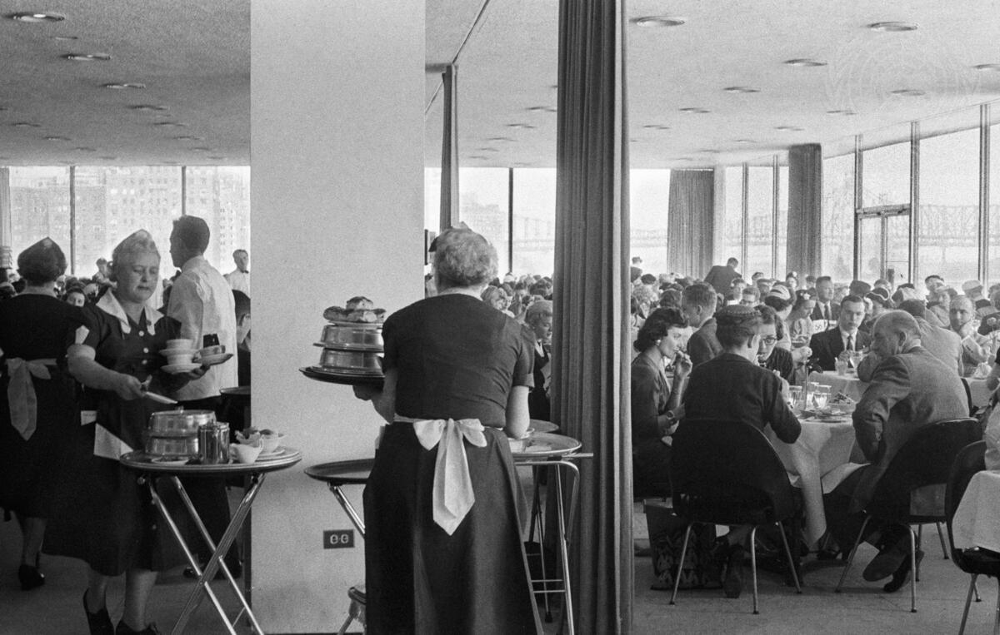
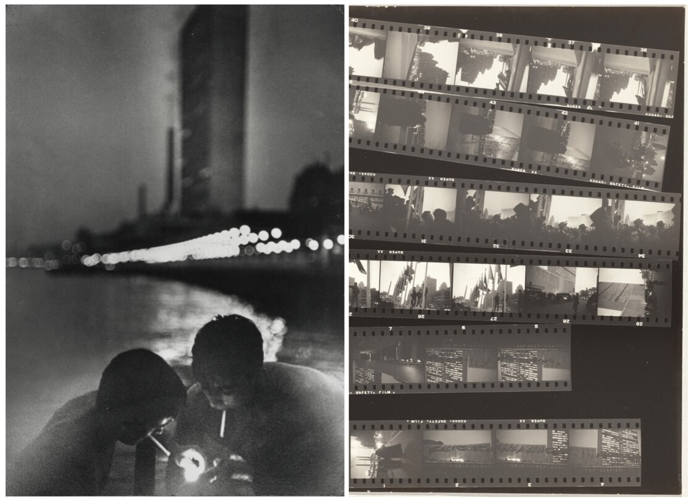
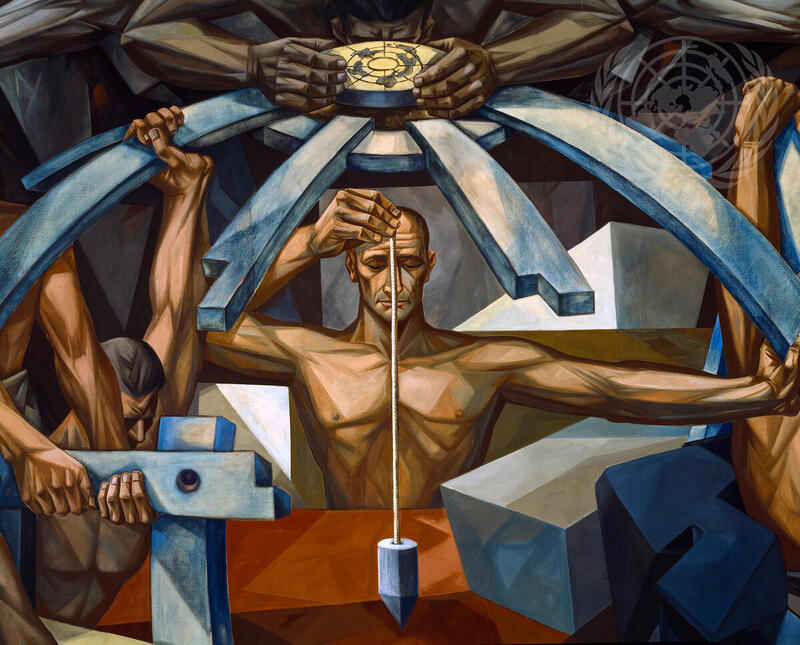

Finding information on what its like to work at the UN is quite difficult, if you dont already know someone who did it. I struggled a bit before I came here, so here is my first-hand report about my experience in New York. Take all of it with a grain of salt, and dont worry if many things sound a bit negative here. It was great!
The Work

Obviously, the work really depends on your department, office, team even. I wont allow myself to comment on workload / responsibilites, it differs even among interns in the same team.
Generally, a lot of tasks (luckily not my role) are note-taking and summarisation tasks, a.k.a you sit in sessions of the Security Council, listen to important people speak and report back to your organisation / department. It can be quite dull, but it’s the sausage making process of international laws and politics.
One thing to keep in mind: The UN is in a very dire financial situation at the moment! Some countries (cough: USA) dont pay their dues (or very late). This leads to budget cuts every second month (or so it seems) and causes problems everywhere. Many resources simply don’t extist, many interns did not get a work laptop and had to use their own, some didnt even get a UN email adress (looking at you, DESA). And if you’re hoping for a follow-up position, it’s very tough at the moment. Not many interns got one, and if they did, the contracts were very short (ca 3 months). But hey, one advantage of the situation: interns get a lot more tasks and responsibilities, because there is just too much work for too few hands :)
Although this may sound gloomy, it’s still an immense privilege to work in this environment at the heart of international politics. You’ll meet so many interesting people, work on the big problems of our time and do important work. It’s just important to anchor your expectations in reality before getting there.
Remember, the UN is not always a slow bureacratic institution, especially your direct coworkers are probably doing wonderful work despite these constraints and try to keep the spirit up in the current situation. My organisation achieved wonderful work with the limited resources they had, and I had a great time!
The Pay
You probably know this by now: there is no pay. Nothing. Nada. Niente. Sometimes, being an intern feels like you are the cheap, expendable workforce keeping the UN running. It’s quite shameful for an organisation that prides itself on values such as Decent Work (SDG 8), where full-time staff earn exorbitant wages and interns get nothing.
I was lucky to receive a scholarship by the german government (if youre german, you can read more about the application process here), and some other states offer something similar to their citizens.
I would budget for at least $2,000 of monthly expenses to live in this city. You can definitely survive on less — and obviously on more — in the end it really depends on your rent and how much you cook at home. I would also suggest having a financial buffer in case of unexpected expenses (they always come up).
Some money saving tips:
- Apply for Fair Fares NYC: Its subsidized subway transport on the MTA, with 50% off the regular fare.
- There are many SROs in the Upper East Side (e.g Kolping) and Upper West Side (e.g International House) that are quite cheap and are well located to get to the UN quickly
- The city has a lot to offer without money, ideally get a NYC ID card for a lot of discounts everywhere
The People

Of course, not paying your interns inevitably leads to a preselection of the people who work there. There are mostly upper class people who can afford to work without pay in one of the most expensive cities in the world. Often times, they are recruited from very prestigious universities (think Science Po, Columbia etc), where it is almost expected that you do something like this. HOWEVER: There is an immense range of people there, from all over the world, from a lot of different backgrounds, and not everyone is a boring careerist.
Dont worry about it too much, you almost always have other interns on your floor you can connect with, and there are plenty of happy hours and free events where you meet lots of different people.
Interlude: The Food

Just a quick side rant. There used to be a beautiful restaurant for UN staff on the first floor – very elegant and good food – which was closed during the pandemic and never reopened (budget cuts).
Now, theres the Riverview Cafeteria: the food is meh, prices are extortionate, and it feels like youre having lunch in a multifunctional conference room. And if you decide to leave the UN for lunch, youre in midtown, the worst neighboorhood for good places to eat. There is a large selection of shops offering slop salad bowls for burnt out office workers, but not much else. The only bright spot: the Amish market with cheap pizza, salads and sushi. However, you then have to go back trough security, which can take its time (especially in tourist season where everyone wants to see the UN). So maybe just bring food from home.
The City

Right: Robert Frank, United Nations Building (1954) [NGA.gov]
I dont need to tell you that New York is just crazy. In good ways as well as bad. You’ll constantly recognise buildings and places from pop culture as you walk through the streets, stumble into famous people and see a plethora of different lives and cultures in just one block. The city has so much to offer: (dive) bars, clubs, museums, politics, and it’s not always expensive. Examples: Culturepass (for free museum entry), Free city gyms and pools (recreation centers), great public libraries (NYPL), … I could go on forever. You’ll just have to experience the magic of this city for yourself!
The End

All in all, it was a great experience! There is a considerable financial barrier, but if you can overcome that (please dont sell your liver for that), it’s so worth it. Try to apply (I cant help you with that, because what the hiring managers look for is so different in every position) and maybe you’ll be lucky.